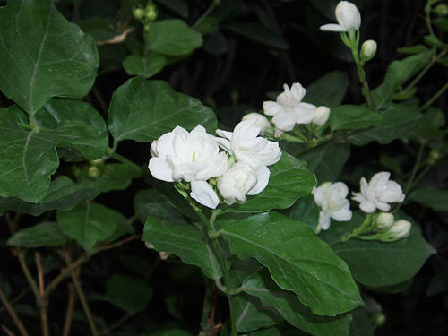
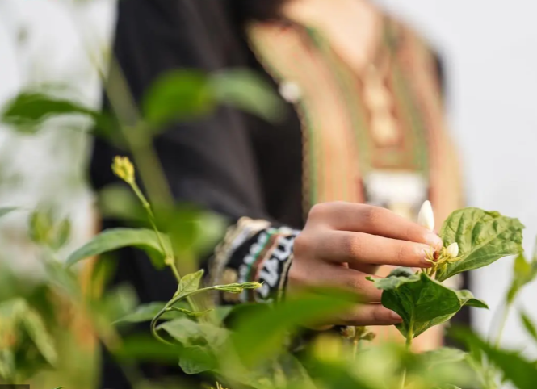
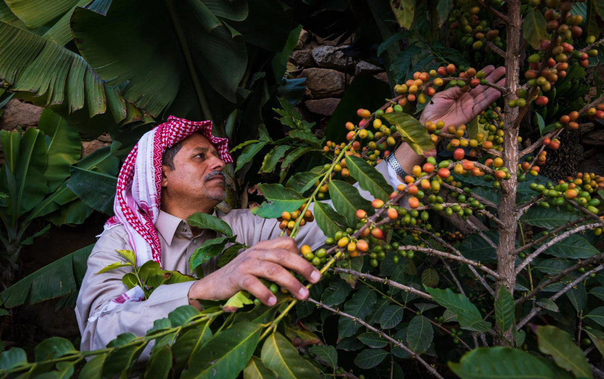
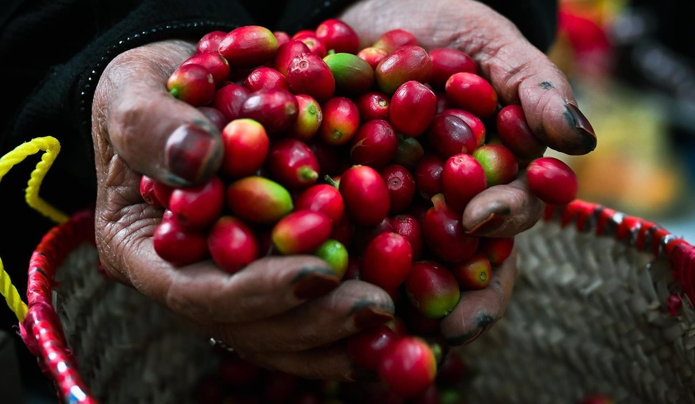
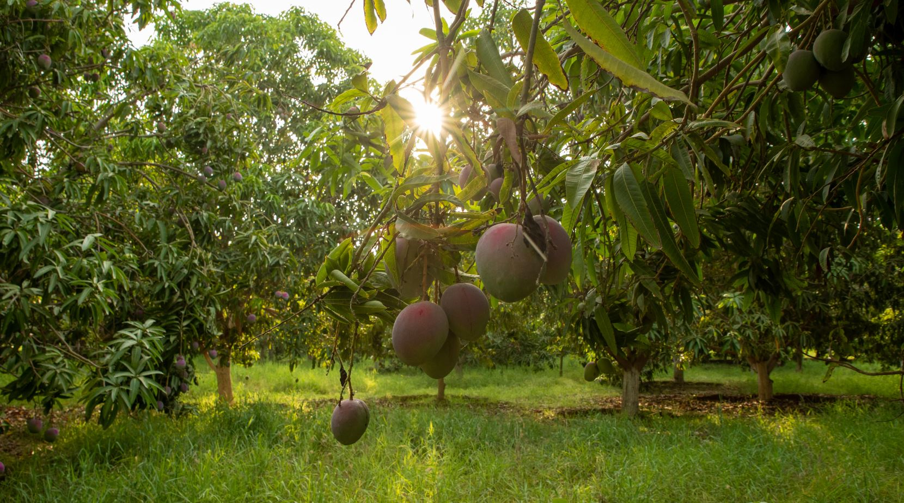
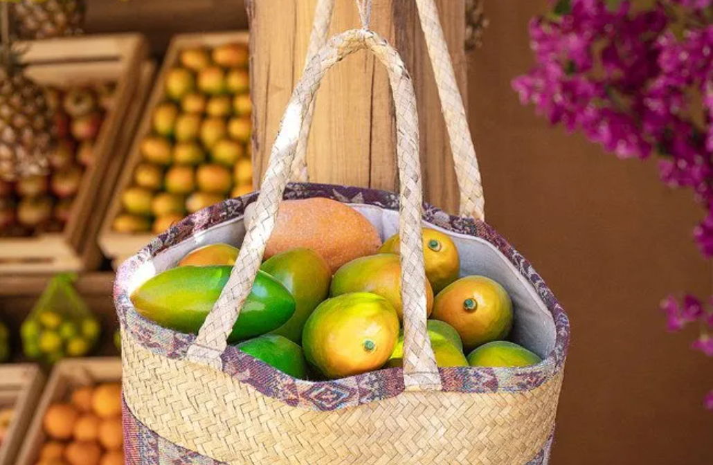
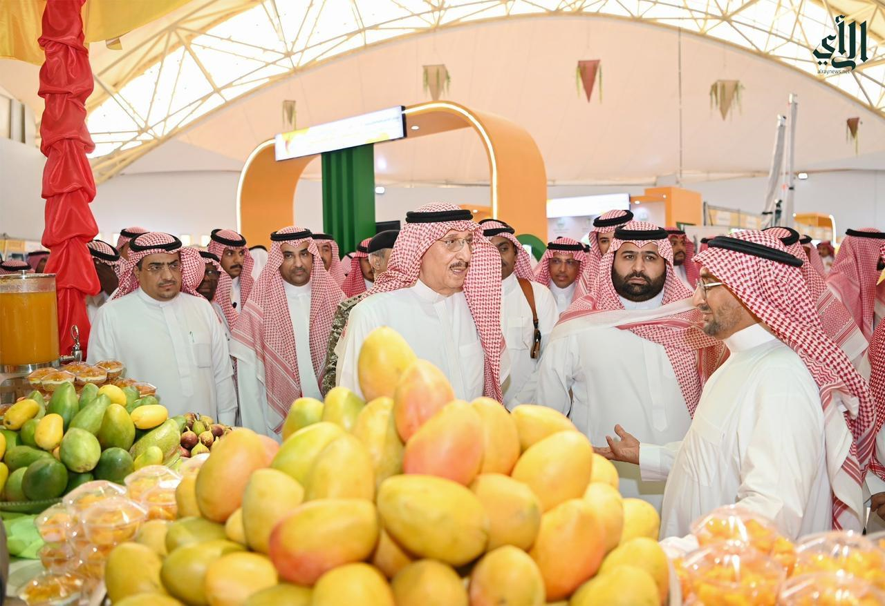

عن موقعنا
هو منصتكم لاكتشاف كنوز الطبيعة في المملكة، حيث نقدم معلومات عن النباتات والثمار المحلية، وأهميتها في الثقافة والعلاج والأسواق. استكشفوا كيف ترتبط هذه الكنوز بتراثنا العريق وحياتنا اليومية

الاسواق المحلية
تزين الأسواق السعودية بأجود المحاصيل الموسمية، حيث تباع التمور، والأعشاب العطرية، والفواكه النادرة التي تعكس تنوع الطبيعة في المملكة

النبات والعلاج
اعتمدت المجتمعات المحلية على الأعشاب والثمار في التداوي، حيث استخدمت التمر، والحبة السوداء، والمورينغا لعلاج العديد من الأمراض

النبات والثقافة
لطالما كانت النباتات جزءًا من الهوية السعودية، مستخدمة في الضيافة، والاحتفالات، والتقاليد العريقة التي تناقلتها الأجيال
الثقافة
لطالما كانت النباتات والثمار جزءًا من النسيج الثقافي السعودي، حيث
ارتبطت بالموروث الشعبي والعادات اليومية
استخدم السعوديون النخيل في بناء المنازل التقليدية، وتزيين المجالس،
وصناعة الأدوات اليدوية، بينما كان تقديم القهوة مع التمر رمزًا
للكرم والضيافة
كما تحمل بعض النباتات دلالات خاصة في الاحتفالات والمناسبات، مثل
استخدام الأعشاب العطرية في حفلات الزواج والتبخير


النبات والعلاج
اعتمدت المجتمعات المحلية على النباتات كطب بديل، حيث كان العطارون
يعالجون الأمراض بوصفات تقليدية مستمدة من البيئة
استخدم التمر كمصدر للطاقة وعلاج لفقر الدم، بينما اعتُبرت الحبة
السوداء علاجًا فعالًا لتقوية المناعة
كما اشتهرت نبتة المورينغا بفوائدها في تخفيف الالتهابات وتحسين صحة
القلب، وأصبح العسل المخلوط بالأعشاب علاجًا شائعًا لكثير من الأمراض
الأسواق المحلية
تعكس الأسواق الشعبية السعودية ثراء البيئة الطبيعية، حيث تمتلئ
بأجود أنواع التمور مثل الخلاص والصقعي، إلى جانب الأعشاب العطرية
كالخزامى والريحان
كما تجد فيها الفواكه الموسمية التي تنمو في مناطق مختلفة، مثل
الرمان في الطائف والمانجو في جازان
وتبقى هذه الأسواق شاهدة على استمرار ارتباط الناس بمنتجاتهم
المحلية، حيث تعد مصدر رزقٍ وأسلوب حياة يعكس تراث المملكة

استكشف المدن
جازان
منطقة تتميز بزراعة محاصيل متنوعة ذات أهمية ثقافية واقتصادية، أبرزها الفل، البن، والمانجو
الفل الجيزاني
الفل الجيزاني هو شجيرة متسلقة دائمة الخضرة، تُعرف بسرعة نموها وقدرتها على التكيف مع الظروف البيئية المختلفة. تمتاز سيقانها القوية بقدرتها على الالتفاف والتسلق، وغالباً ما تحمل أوراقاً ريشية، مما يضفي عليها مظهراً جميلاً وغنياً. "هناك قصة عشق بين الفل، وأهالي منطقة "جازان"، الشهيرة، بتوطن النباتات العطرية. فأصبح "الفل.. فل جازان"، و أصبحت جازان "جازان الفل.. مشتى الكل"
مع الثقافة
غدت عقود الفل على رؤوس الفتيات موروثا شعبيا تحرص نساء جازان على التزين به في المناسبات كالأعراس والمواليد واستقبال الضيوف هو صديق المناسبات في جازان وهو الحاضر الدائم في مختلف المناسبات وهو الضيف الأول والأساس في مناسبات الأفراح والأعياد واستقبال الضيوف والاحتفاء بالمواليد وفي مختلف المناسبات.وهو من الهدايا ذات القيمة العالية التي تقدم لضيوف جازان وأبناء المنطقة
مع الطب
حالات الاحتقان (الزهور)، خافض درجة الحرارة (الأوراق)، آلام العين، أوجاع الرأس (الجذور). غرض الاستعمال : داخلي وخارجي. طبيعة الاستعمال : مغلي، منقوع، مستحضر سائل، محلول، دهن عطري، كمادات
ما يمكن زيارته
مهرجان الفل والنباتات العطرية (محافظة أبو عريش) - مهرجان جازان الشتوي "جازان الفل مشتى الكل - سوق الخوبة (المعروف بـ "سوق الخميس") - سوق صبياء - سوق الصميل (في أبو عريش)
البن الجازاني
يُعد البن من المحاصيل الزراعية الفريدة التي بدأت تشق طريقها في منطقة جازان، حيث تُستغل الظروف المناخية والتربة الخصبة لتوفير إنتاج نوعي يُعزز من هوية المنطقة الزراعية ويسهم في دعم الاقتصاد المحلي. يُمثّل البن في جازان مثالاً على كيفية الاستفادة من التقنيات الزراعية الحديثة والتقاليد الزراعية العريقة لإنتاج محصول ذو جودة عالية وفوائد اقتصادية كبيرة
مع الثقافة

ارتبط البن في ثقافة المجتمع السعودي بتاريخ طويل، إذ يُستخدم في المناسبات الاجتماعية والتجمعات العائلية، ويُعد رمزًا للضيافة والكرم؛ كما يحتل مكانة خاصة في الشعر والأمثال الشعبية التي تُعبّر عن تراث هذا المحصول
مع الطب
يحتوي البن على مضادات أكسدة قوية تساعد في مكافحة الجذور الحرة، وقد أظهرت بعض الدراسات دوره في تحسين وظائف الجهاز الهضمي وزيادة اليقظة العقلية
ما يمكن زيارته
تُقام في بعض مناطق المملكة مهرجانات خاصة لترويج البن وتقديمه للمستهلكين، وتُعتبر الأسواق التقليدية مكانًا رئيسيًا لعرض الإنتاج المحلي من البن، مما يساهم في تعزيز دوره الاقتصادي والتجاري
المانجو الجازاني
تُعتبر فاكهة المانجو من أهم المحاصيل الزراعية في منطقة جازان، حيث تُميز هذه المنطقة مناخًا دافئًا وتربة خصبة وإمدادات مائية وفيرة. وقد استطاع المزارعون في جازان استغلال هذه المقومات الطبيعية لتطوير تقنيات الزراعة وتحقيق إنتاج عالي الجودة من المانجو، مما جعلها رمزًا من رموز الزراعة في المنطقة
مع الثقافة
تُقام في جازان مهرجانات سنوية تُكرم المانجو، مثل مهرجان المانجو الذي يبرز جودة الأصناف المحلية ويجمع المزارعين والأسواق التقليدية، مما يُسهم في الترويج للإنتاج المحلي
مع الطب
يحتوي المانجو على نسبة عالية من الفيتامينات (أ، ج) والمعادن ومضادات الأكسدة التي تساعد في تعزيز الجهاز المناعي، تحسين صحة البشرة والعينين، ودعم صحة القلب والجهاز الهضمي
ما يمكن زيارته
مهرجان المانجو الذي يبرز جودة الأصناف المحلية ويجمع المزارعين والأسواق التقليدية
أترك تعليقك